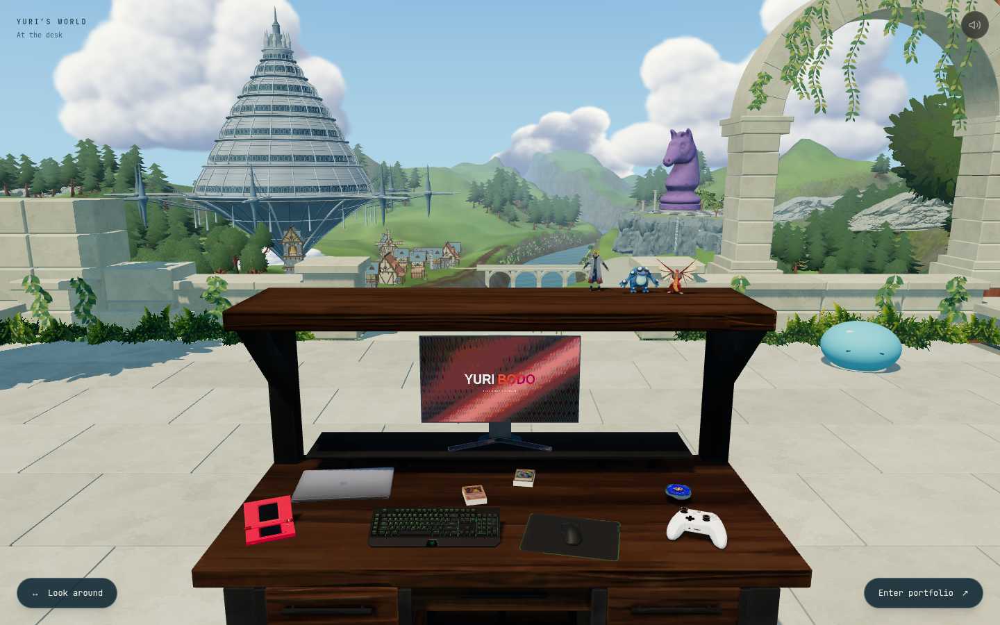
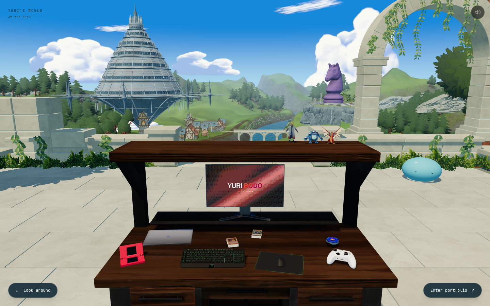

Skybound — o que faltava no céu
O azul estava claro demais e as nuvens grandes, semelhantes e borradas achatavam a paisagem. A revisão distribui bancos de nuvens em diferentes escalas, abre espaço para os marcos e acrescenta filamentos altos.
Antes e depois, na mesma câmera


AtualAnteriorNossa referência aprovada
 A meta visual continua sendo esta imagem. O conceito tem câmera e mesa diferentes da cena atual; não é uma comparação de enquadramento idêntico.
A meta visual continua sendo esta imagem. O conceito tem câmera e mesa diferentes da cena atual; não é uma comparação de enquadramento idêntico.
Referências de mundo aberto

Genshin Impact
Massas luminosas no horizonte, fragmentos menores no alto e planos intermediários de água, rocha e vegetação. Captura no HoYoLAB, por ニクス.

Breath of the Wild
Contraste e cor separam o primeiro plano dos planos distantes. Arte promocional © Nintendo; a comparação das vistas do jogo usa também as páginas impressas 5–6 do Explorer’s Guide.
O que ainda falta no mundo
Silhuetas mais variadas no relevo, transições menos regulares nas margens do rio e uma separação mais forte entre planos próximos e distantes. O enquadramento da mesa também deixa menos área visível de paisagem do que o conceito.
Ler a comparação completa e as notas da implementação.